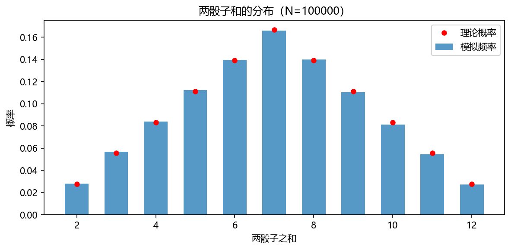
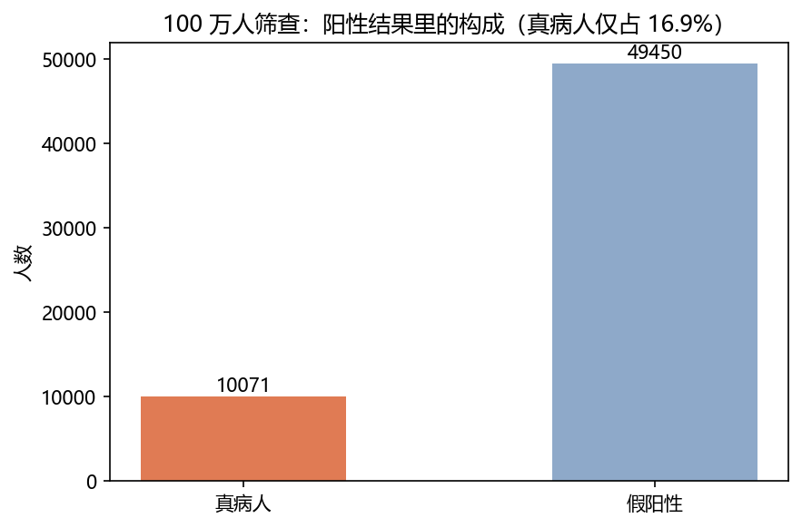
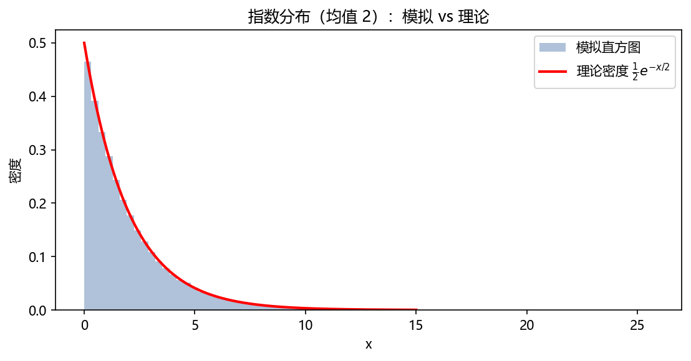
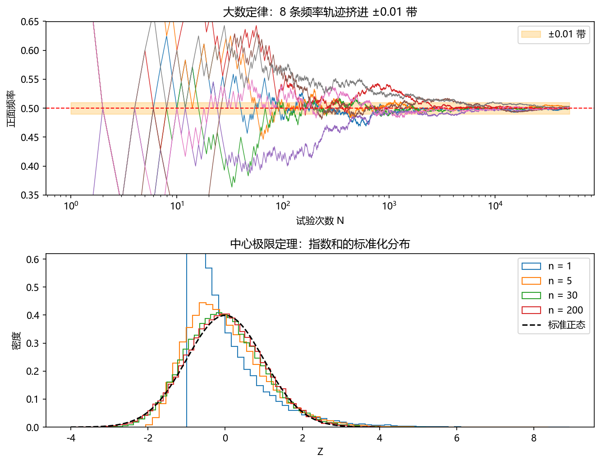
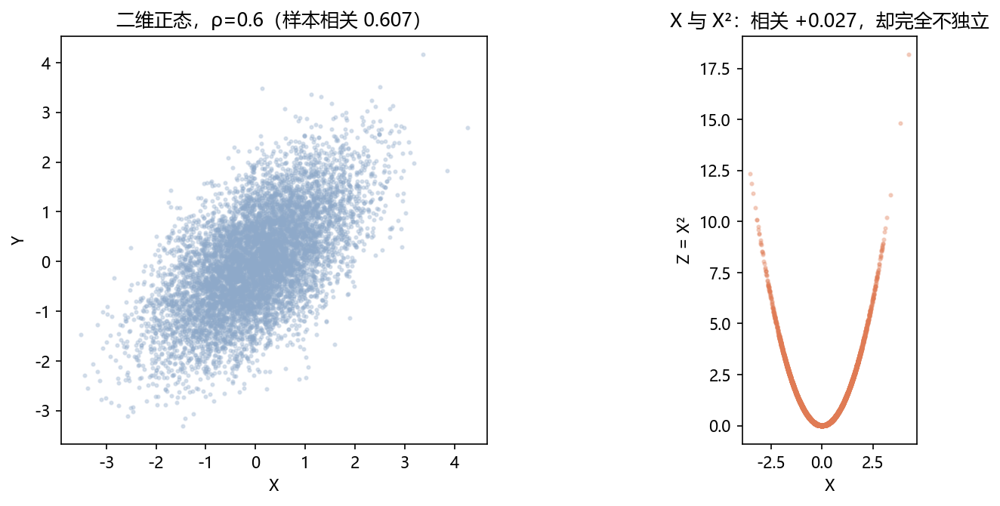
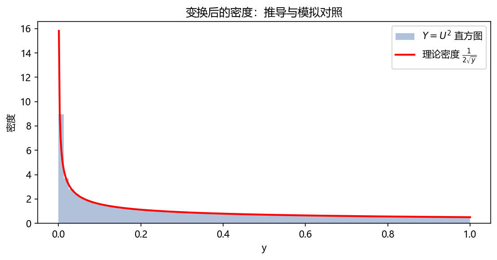

第 2 章 懂点概率论：领会描述随机性的数学语言#
本章解决：把第 1 章例子里"只可意会"的部分公理化、定理化——概率的公理体系（2.2）、随机变量与分布（2.3）、期望方差等数字特征（2.4，按教材顺序中心极限定理在本章末登场）、随机变量的变换（2.5）、大数定律（2.6）。推导不跳步，顺带复习概率论与数理统计的主干。 承上启下：2.4 的中心极限定理给出蒙特卡罗误差棒 \(\sigma/\sqrt N\)（第 4 章记分直接用）；2.5 的 CDF 变换法是第 5 章逆变换抽样的种子；2.6 的大数定律则是整个蒙特卡罗方法的合法性证书。
| 关键词 | 事实 |
|---|---|
| 公理体系 | Kolmogorov 三公理：非负、规范、可列可加 |
| 贝叶斯 | 后验 ∝ 先验 × 似然；"检测 99% 准，阳性后真病人只有 ⅙" |
| 分布三件套 | PMF（离散）/ PDF（连续）/ CDF（统一两者） |
| 矩量 | 期望、方差、协方差、偏度……样本侧对应 x̄ 与 s² |
| 大数定律 | 频率稳定性的定理化（切比雪夫不等式一步证出） |
| 中心极限定理 | 独立和的分布滑向正态：蒙特卡罗误差 \(O(N^{-1/2})\) 的来源 |
本章代码：nb/ch02.ipynb（NumPy 实跑，种子 2025）。
2.1 直观的概率#
概率有三种来源：古典概型（对称性 + 等可能计数，如掷骰子）、频率解释（大量重复试验中频率的稳定值）、主观概率（对不确定事件的信念度）。蒙特卡罗方法立足频率观——第 1 章我们已经"用频率抓到过概率"。
最经典的计数练习：两颗均匀骰子之和 \(S\) 的分布。\(S\) 由两个独立的均匀分布卷出来，"和为 \(k\)"的概率是所有拆法之和：
（这正是离散卷积：分布的独立和 = 分布的卷积。）模拟 10 万次，最大偏差不到 0.002——又一次"频率贴住概率"。

但"等可能"和"数数"只覆盖少数问题。要把概率变成普适工具，需要公理化。
2.2 理解概率的公理#
2.2.1 概率公理与相加性#
Kolmogorov（1933）的公理体系：设 \(\Omega\) 为样本空间，对每个事件 \(A\) 指定实数 \(P(A)\)，满足三条公理：
- 非负性：\(P(A)\ge 0\)；
- 规范性：\(P(\Omega)=1\)；
- 可列可加性：事件 \(A_1,A_2,\dots\) 两两不相容（\(A_iA_j=\varnothing\)），则 \(P\Big(\bigcup_i A_i\Big)=\sum_i P(A_i)\)。
三条公理够用，常用的规则都能推出来。推导加法公式：对任意 \(A,B\)，把 \(A\cup B\) 拆成不相容的三块 \(A\bar B,\ AB,\ \bar AB\)：
两处方括号分别是 \(P(A)\) 与 \(P(B)\)（再把 \(A\) 拆成 \(A\bar B\cup AB\) 即得），所以
不相容时 \(P(AB)=0\)，退化为"相加性"。其余如 \(P(\varnothing)=0\)、单调性同理可推。
2.2.2 条件概率、全概率与贝叶斯公式#
条件概率：已知 \(B\) 发生后 \(A\) 的概率，把样本空间压缩到 \(B\) 内再看：
移项得乘法公式 \(P(AB)=P(A\mid B)P(B)\)。全概率公式：若 \(B_1,\dots,B_n\) 是 \(\Omega\) 的一个划分（两两不相容、并集为 \(\Omega\)，\(P(B_i)>0\)），则对任意 \(A\)：
（推导：\(A= \bigcup_i AB_i\) 不相交拆分 + 乘法公式。）把它倒过来用，就是贝叶斯公式：
三个术语值得记住（后面 MCMC 贝叶斯推断还要用）：\(P(B_k)\) 是先验（prior，看到数据前的信念），\(P(A\mid B_k)\) 是似然（likelihood，"如果假设成立，数据长这样"的概率），\(P(B_k\mid A)\) 是后验（posterior，看到数据后更新的信念）。贝叶斯公式一句话：后验 ∝ 先验 × 似然。
例 1（基率谬误）：某病患病率 1%；检测灵敏度 99%（病人 99% 呈阳性）、特异度 95%（健康人 95% 呈阴性）。检测阳性，真患病概率多大？直觉说"99%"，贝叶斯说：
阳性人群里真病人只有约 ⅙——假阳性反而占大头，因为健康人基数太大（基率压倒似然）。100 万人的模拟计数（10071 对 49450）与公式吻合：

例 2（蒙提霍尔问题收尾）：补上 1.2 节欠的严格推导。你初选门 1，汽车位置 \(C_i\) 先验各 \(1/3\)；主持人开了门 2（山羊，记 \(H\)）。各假设下开门的似然：
由贝叶斯公式，后验
"主持人被迫开门 2"这件事在"车在门 3"时发生的可能性是在"车在你门下"时的两倍——信息就藏在主持人的别无选择里。换门，胜率 \(2/3\)。
2.2.3 独立性#
若 \(P(AB)=P(A)P(B)\)（等价于 \(P(A\mid B)=P(A)\)），称 \(A,B\) 独立。注意独立是"乘积式"定义，"不相容"（\(AB=\varnothing\)）反而是强相关——一个发生另一个必不发生。模拟里最常见的假设是独立同分布（i.i.d.，independent and identically distributed）：每条 history 互不干扰、来自同一分布——大数定律与中心极限定理都以它为前提。
2.3 随机变量与概率分布#
随机变量是把试验结果映射成实数的"读数器"：\(X:\Omega\to\mathbb R\)。分布描述它取各种值的可能性。
离散型：取值可列，用概率质量函数（PMF）\(p_k=P(X=x_k)\) 描述，性质 \(\sum_k p_k=1\)。
连续型：取值填满区间，用概率密度函数（PDF）\(f(x)\) 描述，性质
两个常见误区，值得写透：其一，密度不是概率，\(P(x<X<x+\mathrm dx)\approx f(x)\,\mathrm dx\)，密度只有乘上区间长度才是概率，所以 \(f\) 可以大于 1；其二，连续变量取任何单点的概率为 0（\(\int_x^x f=0\)），所以"\(\le\)"与"\(<\)"随便写。累积分布函数（CDF）统一两种情形：
\(F\) 单调不降、右连续，两端极限 0 与 1。第 5 章的核心算法就建立在它的反函数 \(F^{-1}\) 上。
常用分布速查（模拟视角，谁在什么场合出场）：
| 分布 | PMF / PDF | 均值 | 方差 | 模拟中的角色 |
|---|---|---|---|---|
| 伯努利 \(B(1,p)\) | \(P(X=1)=p\) | \(p\) | \(p(1-p)\) | 单次"成功/失败"判据（hit-or-miss） |
| 二项 \(B(n,p)\) | \(\binom nk p^k(1-p)^{n-k}\) | \(np\) | \(np(1-p)\) | \(N\) 条 history 的成功计数 |
| 泊松 \(Pois(\lambda)\) | \(e^{-\lambda}\lambda^k/k!\) | \(\lambda\) | \(\lambda\) | 单位时间稀有事件计数（到达，第 7 章） |
| 均匀 \(U(a,b)\) | \(\frac{1}{b-a}\) | \(\frac{a+b}{2}\) | \(\frac{(b-a)^2}{12}\) | 一切的原料（第 4 章） |
| 指数 \(Exp(\lambda)\) | \(\lambda e^{-\lambda x}\) | \(1/\lambda\) | \(1/\lambda^2\) | 等待时间（第 7 章排队） |
| 正态 \(N(\mu,\sigma^2)\) | \(\frac{1}{\sqrt{2\pi}\sigma}e^{-\frac{(x-\mu)^2}{2\sigma^2}}\) | \(\mu\) | \(\sigma^2\) | CLT 的极限、误差模型 |
拓展：指数分布的无记忆性
\(P(X>s+t\mid X>s)=\dfrac{P(X>s+t)}{P(X>s)}=\dfrac{e^{-\lambda(s+t)}}{e^{-\lambda s}}=e^{-\lambda t}=P(X>t)\)。"已等了 \(s\) 分钟"这个信息不改变还要再等多久的分布——连续分布中唯有指数有此性质，排队论因此偏爱它（第 7 章）。

2.4 随机变量的数字特征——矩量#
分布是全息照片，数字特征是关键指标：把分布压缩成几个数。
2.4.1 数学期望#
定义：离散 \(E[X]=\sum_k x_k p_k\)；连续 \(E[X]=\int x f(x)\,\mathrm dx\)（要求绝对可和/可积）。都是"取值 × 权重"的加权平均——蒙特卡罗的"样本均值 \(\to\) 期望"正是对它的数值逼近。
2.4.2 期望的运算性质#
线性：\(E[aX+bY+c]=aE[X]+bE[Y]+c\)。推导（离散情形，连续同理）：设 \((X,Y)\) 的联合取值 \((x_i,y_i)\)、概率 \(p_i\)，则
不要求 \(X,Y\) 独立——这条"无条件成立"的友好性质后面反复用到。
2.4.3 方差#
定义与展开：方差度量取值的分散程度，
（第二式推导：\(E[(X-\mu)^2]=E[X^2-2\mu X+\mu^2]=E[X^2]-2\mu^2+\mu^2\)，中途用了期望线性。）尺度变换：
平移不改分散度，缩放按平方计入。标准差 \(\sigma=\sqrt{\mathrm{Var}}\) 与 \(X\) 同量纲。
2.4.4 矩量#
推广方差：\(k\) 阶原点矩 \(E[X^k]\)（一阶即期望），\(k\) 阶中心矩 \(E[(X-\mu)^k]\)（二阶即方差）。三阶标准化得偏度（不对称度），四阶得峰度。指数分布右偏（偏度 2），正态对称（偏度 0）——2.4.6 的 CLT 实验里会看到偏度如何被"求和"磨掉。
2.4.5 统计数据的矩量：样本均值与样本方差（数理统计复习）#
总体分布未知时，用 \(n\) 个 i.i.d. 样本 \(X_1,\dots,X_n\) 估计数字特征：样本均值 \(\bar X=\frac1n\sum_i X_i\)，样本方差（除 \(n-1\)）
为什么除 \(n-1\) 而不是 \(n\)？ 完整推导。由期望线性，\(E[\bar X]=\mu\)，\(\bar X\) 无偏。先拆平方和（加减 \(\mu\) 配方）：
取期望（第二项用到 \(\mathrm{Var}(\bar X)=\sigma^2/n\)，见 2.4.7 的方差可加）：
除 \(n-1\) 恰好抵消"用 \(\bar X\) 代替 \(\mu\)"损失掉的 1 个自由度，使 \(S^2\) 无偏；除 \(n\) 则系统偏低为 \(\frac{n-1}{n}\sigma^2\)。模拟验证（\(n=10\)，2 万次重复）：\(E[S^2]=3.97\approx\sigma^2=4\)，除 \(n\) 版本 \(=3.57\approx 3.6=4\times\frac9{10}\)。
标准误差：估计量 \(\bar X\) 自己的标准差
它就是蒙特卡罗报告的"误差棒"——第 4 章记分的主角。结合 1.1 的账本：误差减半要 4 倍样本，精度提高一位（÷10）要 100 倍样本。
2.4.6 中心极限定理#
定理（CLT）：\(X_1,\dots,X_n\) i.i.d.，均值 \(\mu\)、方差 \(\sigma^2<\infty\)，则 \(n\to\infty\) 时
对蒙特卡罗的翻译：估计误差近似正态，标准差 \(\sigma/\sqrt N\)，且无论 \(X\) 原来是什么分布。由此得到教科书级的误差报告格式：\(95\%\) 置信区间 \(\bar x\pm 1.96\,\sigma/\sqrt N\)（第 4 章的相对误差与品质因子都从这里长出来）。

拓展：CLT 的证明思路
严格证明见 Dunn 附录 C。骨架：对标准化和的特征函数做泰勒展开，一阶项被中心化消掉、二阶项留下 \(-t^2/2\)，于是特征函数逐点趋于 \(e^{-t^2/2}\)——正是标准正态的特征函数；再由 Lévy 连续性定理把特征函数的收敛翻译成分布的收敛。正态在"卷积运算下的吸引子"地位，类比于对数在"乘法下的吸引子"。
2.4.7 联合分布、协方差与二维正态#
两个随机变量一起看，用联合分布：离散 \(P(X=x,Y=y)\)，连续 \(f(x,y)\)（双重积分归一）。边缘分布把另一维积掉：
独立性判据：\(f(x,y)=f_X(x)f_Y(y)\) 对一切 \(x,y\) 成立（离散同理）。
协方差与相关系数：
独立 \(\Rightarrow\) 协方差为零，推导一行：\(E[XY]=\iint xy\,f_X f_Y\,\mathrm dx\mathrm dy=E[X]E[Y]\)。于是独立和的方差可加：
（2.4.5 的 \(\mathrm{Var}(\bar X)=\sigma^2/n\) 就是这条用在 i.i.d. 样本上。）
相关系数只量线性关系：反例 \(X\sim N(0,1),\ Z=X^2\)。由对称性 \(E[XZ]=E[X^3]=0=\mu_X\mu_Z\)，故 \(\rho=0\)；但 \(Z\) 完全由 \(X\) 决定，毫无独立可言。右图抛物线一目了然：

二维正态 \(N(\mu_1,\mu_2,\sigma_1^2,\sigma_2^2,\rho)\)：密度指数为二次型，等高线是椭圆，\(\rho\) 决定椭圆长轴方向；\(\rho=\pm1\) 退化为直线。它的两个好性质后面都用到：边缘仍正态；条件分布 \(Y\mid X=x\) 仍是正态（第 6 章 Gibbs 抽样的温床）。
2.5 随机变量的变换#
已知 \(X\) 的分布，\(Y=g(X)\) 服从什么？这是"造分布"的基本手法。
CDF 法（\(g\) 严格单调增）：先抠分布函数，再求导。
（\(g\) 严格减时中间取 \(P(X\ge g^{-1}(y))\)，绝对值号统一吸收符号。）两步分工明确：CDF 法把"概率"不变地搬运过去，密度还要再除以伸缩因子 \(|g'|\)——变换在哪儿压得越扁，密度就堆得越高。
例 1（线性变换）：\(Y=aX+b\)，\(g^{-1}(y)=\frac{y-b}{a}\)，得 \(f_Y(y)=\frac1{|a|}f_X\big(\frac{y-b}{a}\big)\)。特例：若 \(X\sim N(\mu,\sigma^2)\)，则 \(Z=\frac{X-\mu}{\sigma}\sim N(0,1)\)——CLT 里的"标准化"由此合法。
例 2（平方）：\(U\sim U(0,1)\)，\(Y=U^2\)。\(0<y\le1\) 时
密度在 \(y\to 0^+\) 爆炸（平方把靠近 0 的点压得更密）——20 万样本的直方图与曲线严丝合缝：

拓展
多维变换 \(Y=\mathbf g(\mathbf X)\) 的伸缩因子是雅可比行列式 \(|\det \partial \mathbf g/\partial\mathbf x|\)——第 5 章的 Box-Muller 变换（均匀 → 正态）就是一次二维雅可比运算的现场演出。
2.6 大数定律#
第 1 章欠的最后一笔：频率为什么必然稳定到概率？ 答案只要三步——两个不等式加一次代入。
第一步：Markov 不等式。非负随机变量 \(Y\)、\(a>0\)：
（事件内 \(Y\ge a\)，故 \(1\le Y/a\)；丢掉示性函数只会放大。）直觉：平均值越小，远离平均的尾巴越翘不起来。
第二步：Chebyshev 不等式。取 \(Y=(X-\mu)^2\)（非负）、\(a=\varepsilon^2\)：
第三步：代入样本均值。i.i.d. 样本的 \(\bar X\) 满足 \(E[\bar X]=\mu\)、\(\mathrm{Var}(\bar X)=\sigma^2/n\)（2.4.7），于是对任意 \(\varepsilon>0\)：
这就是弱大数定律（weak LLN）：样本均值依概率收敛到总体均值。Bernoulli 情形（\(X_i\) 记 0/1，\(\sigma^2=p(1-p)\le\frac14\)）即 Bernoulli 大数定律：
代入 1.1 图的 ±0.01 带：\(N\ge \frac{1}{4\times 0.01^2}=2500\) 时界开始小于 1。注意 Chebyshev 界极其保守（真实收敛快得多——CLT 说误差是 \(0.5/\sqrt N\) 量级），它贵在"对一切分布成立、两步证完"。
强弱之分：弱形式说"任一固定时刻落在带内的概率趋于 1"；强形式（Kolmogorov）说"单条轨迹最终永远待在带内"（几乎必然收敛，Dunn 附录 B 有弱形式的完整证明与两者区别的讨论）。蒙特卡罗实践用的是弱形式 + CLT 误差棒，够用。
收束：大数定律是蒙特卡罗的合法性证书——只要答案能写成 i.i.d. 样本均值，\(N\to\infty\) 必收敛；中心极限定理是速度说明书——误差 \(\sigma/\sqrt N\)、报告 \(\pm1.96\sigma/\sqrt N\)。理论闭环了，但还有一个环节没交代：计算机里的"均匀随机数"真的是随机的吗？下一章拆开这台造随机数的机器。
拓展
大数定律的原型出自 Jacob Bernoulli《猜度术》（1713，身后出版）——第 1 章历史框里那位 Bernoulli。为论证"试验足够多时频率必收敛"，他花了 20 年；今天 Chebyshev 不等式让我们十行证完，这是公理化体系的力量。